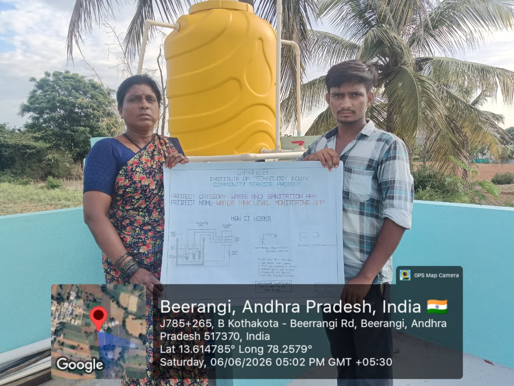
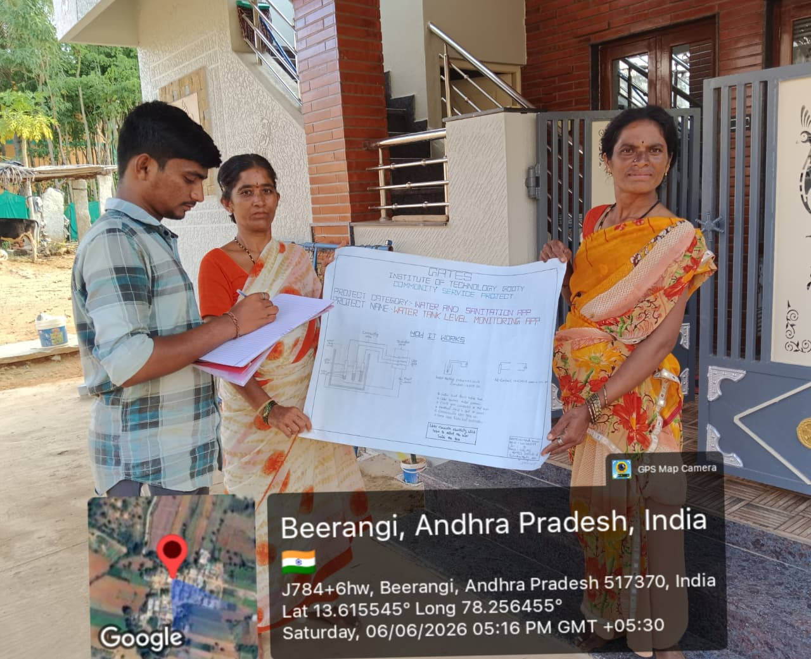
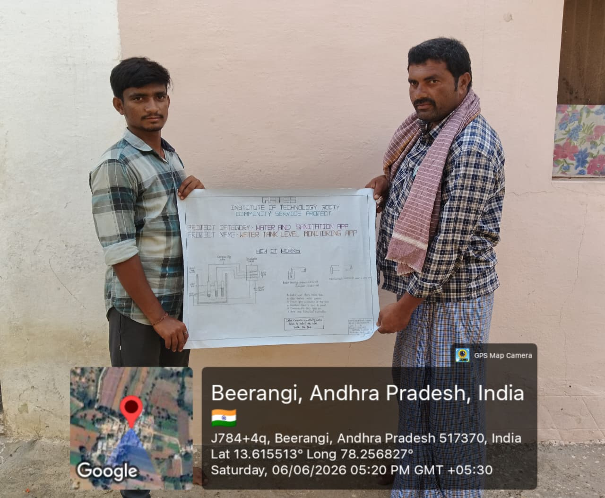
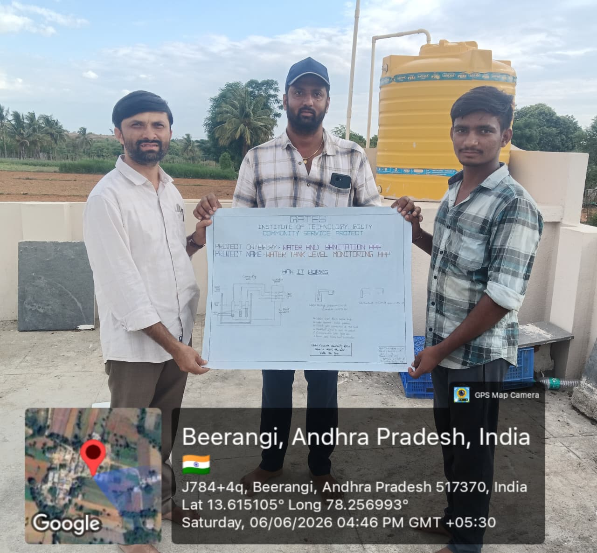
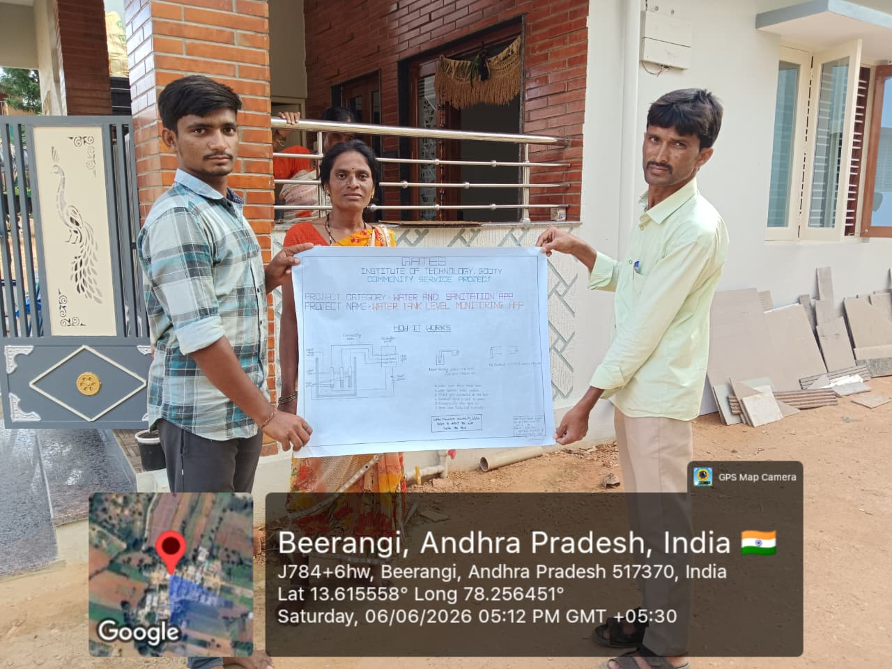
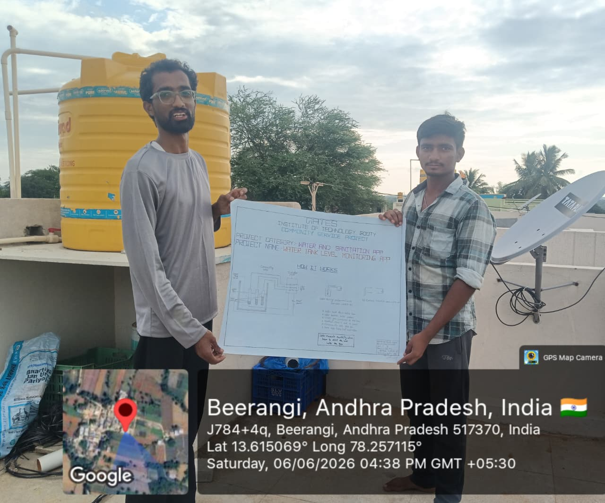

WATER TANK LEVEL MONITORING APP
11. Water and Sanitation Apps (121-130)
Project Details
About the Project
This Water Tank Level Monitoring App is developed as a Community Service Mini-Project under the category Water and Sanitation Apps (121-130). The application helps communities monitor water tank levels in real time, reduce water wastage, and prevent overflow or shortage situations.
The system displays live tank level percentage, volume readings, sensor data, alert thresholds, and historical level charts. It supports manual controls and live simulation for demonstration and community awareness on efficient water usage and sanitation management.
- Monitor water tank level using sensor-based readings
- Display volume, temperature, pressure, and flow rate data
- Alert users when level is low, normal, or high
- Maintain data log and level history for analysis
- Promote water conservation and sanitation awareness
Application Screenshots
Images of the Water Tank Level Monitoring App.





